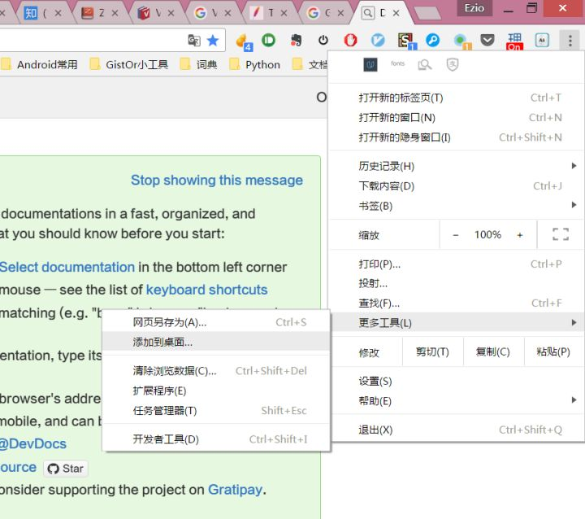
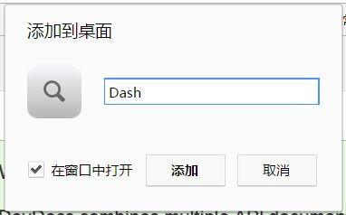

@(工作笔记)
chrome-record
[TOC]
网页做成web app , 直接用 alfred 搜索
1.打开网站，然后添加到桌面：

2.注意勾上在窗口中打开

3.完成
必知必会 filetype:doc
Chrome您的连接不是私密连接解决办法--一个比较实用的技巧分享
问题：运行项目在Chrome中打开出现以下问题
这个问题大量出现在我访问公司网络，github之类的，头疼得很
您的连接不是私密连接 攻击者可能会试图从 x.x.x.x 窃取您的信息（例如：密码、通讯内容或信用卡信息）。了解详情 NET::ERR_CERT_INVALID
将您访问的部分网页的网址、有限的系统信息以及部分网页内容发送给 Google，以帮助我们提升 Chrome 的安全性。隐私权政策 x.x.x.x 通常会使用加密技术来保护您的信息。Google Chrome 此次尝试连接到 x.x.x.x 时，此网站发回了异常的错误凭据。这可能是因为有攻击者在试图冒充 x.x.x.x，或 Wi-Fi 登录屏幕中断了此次连接。请放心，您的信息仍然是安全的，因为 Google Chrome 尚未进行任何数据交换便停止了连接。
您目前无法访问 x.x.x.x，因为此网站发送了 Google Chrome 无法处理的杂乱凭据。网络错误和攻击通常是暂时的，因此，此网页稍后可能会恢复正常。
小伙教了我一招，我感觉很实用
解决：就是在当前页面用键盘输入 thisisunsafe ，不是在地址栏输入，就直接敲键盘就行了，页面即会自动刷新进入网页。
原因：因为Chrome不信任这些自签名ssl证书，为了安全起见，直接禁止访问了，thisisunsafe 这个命令，说明你已经了解并确认这是个不安全的网站，你仍要访问就给你访问了。
TLS/SSL
openssl req -newkey rsa:2048 -new -nodes -x509 -days 3650 -keyout key.pem -out cert.pem
http-server -S -C cert.pem -p 8000